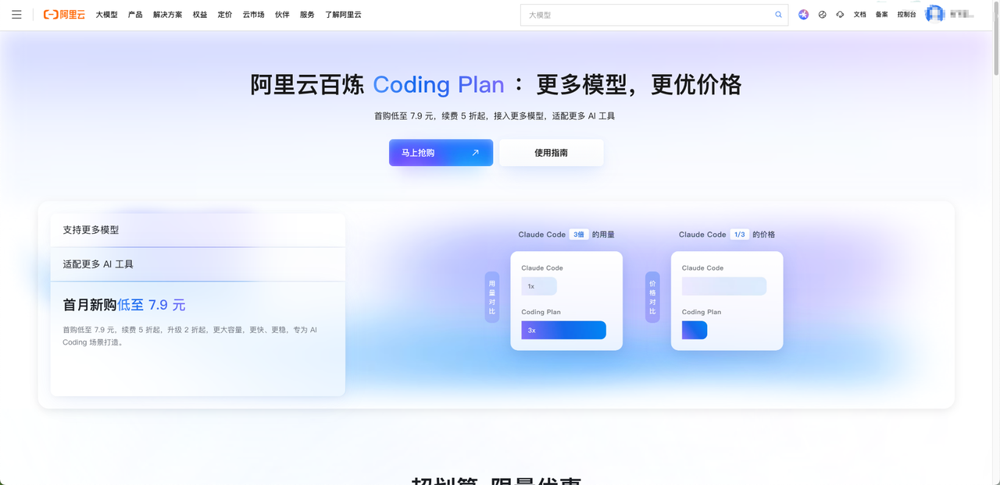
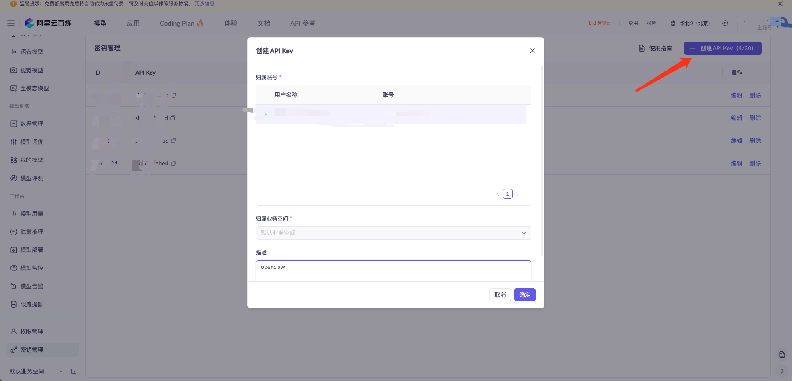
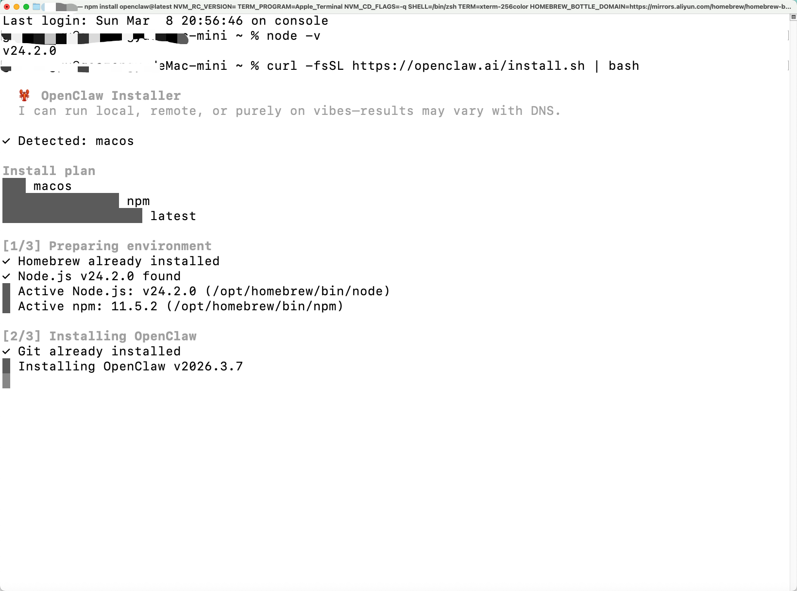

阿里云 Coding Plan 接入 OpenClaw¶
标签：
API配置：有环境：本地安全性：中IM接入：无
这篇文档整理自 tpm7，适合第一次接触 OpenClaw，并且希望使用阿里云 Coding Plan 跑稳定编码工作流的用户。
1. 这篇教程解决什么问题¶
完成后，你可以做到：
- 开通阿里云 Coding Plan
- 获取专属
sk-sp-API Key - 安装并初始化 OpenClaw
- 在
~/.openclaw/openclaw.json中补充百炼模型配置 - 验证
bailian/qwen3-coder-plus是否可用
2. 前置条件¶
开始前请先确认：
- 你已经有阿里云账号
- 已完成支付方式设置
- 本机已安装 Node.js 22 或更高版本
- 你接受 Coding Plan 的使用限制，不把它当成批量自动化 API 来刷
3. 一分钟总流程¶
原稿总结得很清楚，可以直接保留：
- 在阿里云 Model Studio 订阅 Coding Plan
- 获取专属
sk-sp-xxxxxKey，而不是普通sk-xxxxx - 安装 OpenClaw，并先跳过模型绑定
- 编辑
~/.openclaw/openclaw.json，添加bailianprovider - 重启 OpenClaw gateway
- 切换到
bailian/qwen3-coder-plus做测试
4. 详细步骤¶
4.1 订阅 Coding Plan¶
打开阿里云 Model Studio 的 Coding Plan 页面：
https://cn.aliyun.com/benefit/scene/codingplan?from_alibabacloud=
选择合适套餐并完成购买。

4.2 获取专属 API Key¶
打开百炼控制台的 API Key 页面，获取你的专属 Key：
https://bailian.console.aliyun.com/cn-beijing/?spm=a2c81.expense_cost_summary.aillm.2.19a120a0ZJrHpV&tab=model&scm=20140722.S_APIkey页面._.RL_APIkey页面-LOC_aillm-OR_chat-V_3-RC_llm#/api-key

这里要特别注意：
- 必须使用
sk-sp-开头的专属 Key - 不要误用普通百炼 Key
4.3 安装 OpenClaw¶
原稿先让你验证 Node.js 版本，再安装 OpenClaw。
不过具体命令在飞书外不可见，所以这里保留为流程说明：
- 先确认 Node.js 版本
>= 22 - 再执行 OpenClaw 安装命令
- 安装完成后执行初始化
安装界面的示意图如下：

如果首次引导中出现模型配置选项，原稿建议先跳过，后面手动写配置会更稳。
5. 首次配置建议¶
原稿给出的推荐选项可以整理成这样：
- 风险确认：
Yes - Onboarding mode：
QuickStart - Model/auth provider：
Skip for now - Filter models by provider：
All providers - Default model：
Keep current - Channel：
Skip for now - Skills：
No - Hooks：空格选中，再继续
- Hatch your bot：
Do this later
这样做的目的是先把 OpenClaw 装干净，再单独接百炼模型。
6. 手动写入百炼配置¶
原稿后半段的关键步骤是：
- 设置环境变量保存 API Key
- 打开
~/.openclaw/openclaw.json - 把
bailianprovider 合并进去 - 设定默认模型
- 重启 gateway
但这里有几段具体命令和 JSON 原文，在飞书外不可见，所以这篇整理稿只保留结构，不凭空补造细节。
如果你后面准备把这篇继续完善成正式教程，最值得优先补上的就是：
- 环境变量设置命令
openclaw.json的完整示例- 重启命令和验证命令
7. 验证是否接通¶
原稿的验收标准很明确：
- 没有
401 - 没有
invalid api key - 模型能正常返回内容
- 可以在多个
bailian/*模型之间切换
如果这几点都满足，就说明接入成功。
8. 常见问题¶
8.1 HTTP 401: Incorrect API key provided¶
先检查：
- Key 是否是
sk-sp-开头 - 订阅是否仍在有效期
- 配置中是否有空格、换行或多余引号
8.2 明明开了套餐，还是按量计费或提示欠费¶
通常是因为参数不对。原稿强调必须同时满足：
- Key 是专属
sk-sp-xxxxx - Base URL 使用 Coding Plan 对应地址
8.3 配置修改后不生效¶
常见原因：
- 忘记重启 gateway
- JSON 格式写错
- 配置合并时把别的字段覆盖掉了
9. 后续建议¶
原稿最后的建议值得保留：
- 尽量不要明文暴露密钥
- 默认模型只保留最常用的 2 到 3 个
- 团队使用时最好整理一份标准配置模板
- 高权限工具最好放到隔离环境里运行
10. 参考资料¶
原稿附的参考资料如下：
- Alibaba Cloud Model Studio - Coding Plan Overview: https://www.alibabacloud.com/help/en/model-studio/coding-plan
- Alibaba Cloud Model Studio - Get started with Coding Plan: https://www.alibabacloud.com/help/en/model-studio/coding-plan-quickstart
- Alibaba Cloud Model Studio - OpenClaw integration: https://www.alibabacloud.com/help/en/model-studio/openclaw-coding-plan
- OpenClaw Docs - Model Providers: https://docs.openclaw.ai/concepts/model-providers